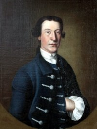

|
by Stefan Bielinski Stephen Van Rensselaer II was baptized in the Albany Dutch church in June 1742. He was the sixth and last child of Patroon Stephen Van Rensselaer and his wife, Elizabeth Groesbeck. With the death of his father in 1747, this sole surviving son was ordained to become lord of the manor of Rensselaerswyck at the age of five! In January 1764, he married Albany native Catharina Livingston in New York City. That November, their first son, Stephen, was born in New York City. The marriage also produced another son and a daughter - who were born on the manor. While just twenty, Stephen II was commissioned a captain in the Albany County Militia. He remained an officer of the Albany troop of horse for the remainder of his short life. In 1768, he was commissioned Colonel of the Rensselaerswyck regiment! In 1763, the Albany government had granted him the "freedom of the city." However, his Rensselaerswyck responsibilities probably precluded an active role in Albany affairs. Following his marriage, he took up residence at the family farm while also keeping the city property inherited from his father. In 1765, he built a new Manor House from where he sought to rehabilitate the manor that had lacked active leadership since the death of his father almost two decades earlier. He may have been responsible for the map of the manor dated 1767 which would have helped describe his domain. However, those plans were dashed when he died on October 19, 1769. Stephen Van Rensselaer II lived just twenty-seven years! His will, filed only two months earlier, claimed that he was in "a reasonable state of health." As one of the richest men in the region, the will detailed the terms by which his extensive estate was to be shared by his widow and three living children.
Portrait of Stephen II by Thomas Mc Ilworth, about 1763. Detail copy of a painting in the collection of the Albany Institute of History and Art. His will directed the painting to his only daughter year-old Elizabeth "so that she might know her father's face." Manor Lord: Stephen II sought to structure leaseholds and rein-in the loose land policies of his family in the past. His abbreviated management of Rensselaerswyck is considered in Sung Bok Kim, Landlord and Tenant in Colonial New York" Manorial Society, 1664-1775 (Chapel Hill, NC, 1978), pp. 176, 194-95, 211-13, 225, 364. His lease of a large tract of land near the Massachusetts border to a group of New Englanders (eventually became Stephentown) in 1765 was an attempt to co-opt potentially troublesome newcomers. first posted 9/10/01; recast 6/10/11; last updated 2/18/15 |
{kind=link}